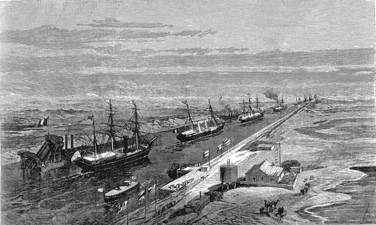

19. yüzyılda Osmanlı İmparatorluğu’nun liman şehirlerinde önemli değişmeler meydana geldiği açıktır. Selanik, İzmir, Trabzon, Beyrut ve Basra bunların arasında en önemli ve dikkati çekenlerdir. Basra özellikle, Mezopotamya ile dış dünyanın bağlantısını kuran bir nirengi noktasıdır. Tıpkı İskenderiye, İzmir, Selanik gibi Basra da, geleneksel tarımdan Batı sanayi dünyasının ihtiyaçlarına yönelik bir tarımsal yapıya geçişin biçimlendirdiği liman şehridir. Temel özellik budur. Ancak İskenderiye, Beyrut, Selanik kozmopolit bir din ve diller dünyasının, siyasal, kültürel renklilik ve kurumlaşmanın da merkezi oldular. Basra için bunu söylemek zordur. (Temelde İzmir de, Selanik’ten daha zengin bir hinterlandın (artülke) kapısı olmakla beraber, Selanik gibi bir siyasî, etnik hinterlandın odak noktası değildi. Aslında kozmopolitliği Makedonya merkezininkinden farklı olduğundan, İzmir şehri de renkli bir kültür ve basın hayatına rağmen, Selanik gibi yoğun bir siyasete ve siyasî teşkilâtlanmaya sahne olmamıştır.) Basra’nın 19. yüzyıldaki gelişimi tarih yaşamında dikkati çekmeden kalmıştır. 19. yüzyıl Basra’sı, Kuveyt meselesi etrafındaki Britanya-Almanya-Osmanlı rekabeti ve tabii Berlin-Bağdat-Basra Alman demiryolu projesi nedeniyle dikkati çekip zikredilmektedir. Basra, ekonomisi ve ticareti itibariyle neydi? Bunu ele almak gereklidir. Mısır İskenderiye’si 19. yüzyılda Britanya idaresi altında Akdeniz’in en kozmopolit büyük şehirlerinden biriydi (meselâ en kalabalık Hellen nüfusu barındıran şehir). Beyrut ise, daha çok Fransız ekonomik kültürel etkisi altındaydı. Basra’nın durumu neydi? Britanya konsolosluk raporları (ki konsoloslar India Government tarafından tayin edilirdi) bölgedeki İngiliz proje ve emellerini gizlemiyordu.

Britanya hükümeti Basra körfezini, Hindistan altkıtası ve Mısır-Süveyş hâkimiyetinin,
kaçınılmazbir çevre ve destek alanı olarak görünüyordu. Süveyş Kanalı 17 Kasım 1869’da
İmparatoriçe Eugénie’nin katıldığı ve gemilerin geçit resmi yaptığı bir törenle açılmıştı
(The Illustrated London News).
19. yüzyılın ikinci yarısında, Basra vilâyeti iki önemli idarî değişiklik geçirdi. Bölge Osmanlılar tarafından tamamıyla 1534’te fethedilmiş sayılmalıdır. Basra, genel olarak Bağdat eyâletinin bir parçasıdır. Gerçi, Osmanlılar bu bölgede ayrılıkçı ve isyancı hareketi yok etmekte katî bir başarı sağlamış ve tam hâkimiyet kurabilmiş değillerdi. Bedevî kabilelerin isyanları, mahallî hanedanların çeşitli üslûbdaki direnişleri görünüyordu. Bu nedenle, Rumeli kıtasının tersine, Osmanlı idaresi Arabistan’ın bu bölümünde (Lübnan’da olduğu gibi) mahallî hanedanlara idareyi bırakmak; daha doğrusu merkezî hükümet temsilcileri yanında onları idareye iştirak ettirmek veya belirli sahalarda idareyi onlara vermek gibi bir tarzı benimsemiştir. Meselâ, 17. yüzyılda Ali Paşa (1625) ve torunu Hüseyin Paşa (1650), Afrasyab sülâlesi olarak burada yöneticilik yaptılar ve merkez bunu tanıdı. Bu tıpkı Cebel-i Lübnan’da Ma’anoğulları’nın idaresi gibi bir durumdu. Bu mahallî beylerin yönetimde olmaları; Portekiz, İngiliz ve Hollanda tüccar gemilerinin limanı üs edinmelerini ve Basra körfezi ticaretinin yerleşmesini sağladı ve suyolunun kullanımını artırdı. Basra ve çevresinin bu nedenle bir tür iktisadî özerklik edindiği ve hatta idarede Bağdat valisine karşı bir özerk tutum sürdürülmesine ve Bağdat beylerbeylerinin bunu kısıtlama çabalarına karşı uzun bir dönem bu tutum ve yapının sürdürüldüğü anlaşılıyor.[306] Vakıa, 1830’larda başlayan merkezî idarî reformların ağırlığı bölgede de hissedilmekteydi. Bununla birlikte Basra, Doğu ticareti için önemli bir bölge olsa da, bölgedeki Muntefika gibi bedevî aşiretler kamu güvenliğini sarsacak soygun gibi faaliyetlerde bulunuyorlardı.
Bazı tarihçiler, Basra’nın 1267/1850’de doğrudan İstanbul’a bağlı bir vilâyet olarak örgütlendiğini belirtirler.[307] Fakat bu durum zaman zaman değişmiştir. Bazen Basra bir eyâlet gibi, bazen de Bağdat eyâletinin bir sancağı olarak yönetilmiştir. Bu dönemde Avrupa ve Amerika ile ticaretin arttığı, ticarî ilişkilere yönelik kurumların ortaya çıkmasından da anlaşılıyor.[308] Liman bir ölçüye kadar tamir görmüş; Şattü’l-Arab ağzında derin bir kanal kazılmıştır.[309] Şehrin hayatındaki bu görünür modernleşme, belirtelim ki, Midhat Paşa’nın Bağdat valiliği zamanındadır. Böylelikle Basra, Mezopotamya için bir toplayıcı nokta ve dış dünya ile ilişki kuran bir merkez haline dönüşmekteydi. 19. yüzyılda bir eyâlet olarak Basra üç sancaktan oluşuyordu. Merkez Basra, Muntefika (yahut Nasiriyye) ve Necid.
Vilâyet : BASRA
Merkez : Basra
Sancak : Muntefika (Nasiriyye), Necid
Kaza : Basra, Kurna, Kuveyt Suku’l- şuyuk, Şatara, Hîye, Hamar, Katar, Hûtuf, Katîf
1870’ten sonra Ammare de bir sancak olarak örgütlendi. Bazı beldeler, mahallî rüesâ arasından seçilen kaymakamlar tarafından yönetiliyordu. Bu yeni organizasyon, 1864 Vilâyet Nizamnâmesi hükümlerine göre cereyan ediyorsa da, giderek mahallî eşraf ve rüesânın yerini merkezden tayin edilen memurlar almaya başladı. 1869-72 yılları arasında Bağdat valiliği yapan Midhat Paşa bu uygulamanın öncüsüdür. Meselâ, Katîf kazası kaymakamı (Necid Sancağı) olan Faysal ailesi ve memurları bu bölge Şîîlerinden istisnaî vergiler almak istemiş ve baskı uygulamışlardı; bu nedenle Midhat Paşa bu aileyi askerî güçle yerlerinden ve makamdan atmıştı.[310]
Nüfus ve Şehirler
Basra bölgesinin bu dönemi için kesin nüfus miktarları vermek mümkün değildir. Bu Osmanlı nüfus ve arazi sayımındaki sistemin eksikliği ve eskiliğiyle ilgilidir. Evvela nüfus sayımı hane esasına, sonra erkek nüfusuna dayanır. Saniyen gruplama etnik yapıya değil, dinî aidiyete göre yapılır. Bu keyfiyet Rusya’nın bizden sonra Tuna vilâyeti ve Kars’ta yaptığı sayımlarla, Osmanlı nüfus tahriri verilerini karşılaştırdığımızda anlaşılır. Hane halkı sayısının ne olabileceği, tarihî demografinin tartışma alanıdır. Kırsal ve kentsel nüfusun aynı sıhhatle tesbit edilemediği de gerçektir. Ancak, 19. yüzyıl sâlnâmeleri her yer için Vital Cuinet gibi araştırmacılara, hem de büyük ölçüde konsolos raporlarına da kaynak teşkil etmiştir. 1307/1889 tarihli Sâlnâme-i Vilâyet-i Basra, Basra merkez sancağının nüfusunu 10.000’in üzerinde veriyor. Ammare sancağı, bunu 7.000 nüfusla izliyor. Basra nüfusunun % 30’u Sünnî, % 50’si Şîî ve geri kalanı da Hıristiyan ve Musevidir.
Basra şehri, gelişen bir limanın özelliklerini ve işlevlerini sergiler. Meselâ, bir belediye binası, vali konağı, postahane; Dub’da asker kışlası; Menavî’de bahriye kışlası vardır. Bundan başka matbaa, demirhane, gümrük binası, hastahane, mekteb-i rüşdiye, 4 adet iptidaî mektebi, 13 cami ve mescid, medrese ve dükkânlar şehrin manzarasını tamamlar.
Vilâyet Meclis-i İdaresi’nde; vali, defterdar, mektubcu, müfti ve nakîb (ü’l-eşraf) iki müslim ve iki de gayrimüslim ahali temsilcisi vardır. Genelde Anadolu vilâyetlerinde iki gayrimüslim üye her zaman bulunmaz. Basra’da ise gayrimüslimlerin etkili bir sosyal, ekonomik rolü vardır. Mezopotamya değişik bir dünyaydı. Şehirde Britanya, Fransa, Almanya, Amerika, Avusturya-Macaristan ve kayıtlarda her zaman görülmemesine rağmen, İran viskonsülleri vardı. Britanya temsilcileri Londra tarafından değil, Hindistan kral niyabeti tarafından tayin edilen, Şark ülkelerini tanıyan memurlardı. Ticaret dış dünya ile ilişkileri artırıyordu.
Düyûn-ı Umûmiye direktörü Ali Bey’in Hint gezisi sırasında Seyahat Jurnali adlı eserinde zikrettiği gibi, uğradığı Basra bu dönemin Basra’sıdır. Hurma mahsulü toplandığında, doğrudan Basra’dan Süveyş tarikiyle Batı’ya sevk ediliyordu. Buna rağmen Basra’nın Batı dünyası ile teması daha çok Hindistan altkıtası aracılığıyla oluyordu. Bu bataklık ve sıtmalı bölgede[311] özellikle askerin arasında bu hastalığın yayılması, Osmanlı idaresi için büyük problemdi. Buna Basra’da sık görülen kolera salgınını da ilâve edersek, 19. ve 20. yüzyıl başında beynelmilel trafiğin Basra’da yarattığı problemler anlaşılmış olur.
Amerika Birleşik Devletleri’nin Basra’daki viskonsülünün raporuna göre, Kerbelâ, Necef, Hilla ve Kûfe, Divâniye, Ammare, Hosrabâd ve Samara’da 15 gün zarfındaki ölüm vakaları 30 Haziran 1904 tarihi itibariyle (74 vaka Kerbelâ, 156 Necef, 146 Hilla) hayli yükselmişti.[312] Karantina tedbirlerine rağmen kolera salgını önlenemiyordu. Burada, Osmanlı idaresinin örgütlenme noksanları ve imkânsızlıkları kadar, deniz ulaşımının tamama yakınını elde tutan Britanya’nın lakayt ve işbirliğine yanaşmaz tutumunun da rolü vardı. Hint’in salgınları Britanya gemileriyle Basra’ya yığılıyordu.
Ulaşım
Avrupa ve hatta Rusya’ya nazaran Osmanlı demiryolu şebekesinin hem geç kaldığı hem de azgelişmiş olduğu malûmdur. Fakat bu imparatorluk, merkezî bir idarenin gereksinim duyduğu haberleşme araçlarını, özellikle posta-telgraf sistemini gerçekleştirebilmiştir.
19. yüzyıl sonunda Basra İstanbul’a Bağdat üzerinden bağlanmakla kalmadı; aynı zamanda Far denen bölge üzerinden Hint ve Avrupa ile bağlantı kurabildi. Basra-Kurna-Ammare ve Kuttü’l-Ammare-Bağdat arasında oldukça ve mükemmel bir posta sistemi kurulabilmişti. Maamafih bu hizmet Basra-Necid ve Basra-Muntefika bölgesi bedevîlerinin saldırıları yüzünden sık sık devre dışı kalıyordu. Bölgede, kanun güvenliği zor sağlanıyordu ve çöl bedevîleri kendi alanlarına hâkimdi. Burada ancak zabtiye gözetiminde posta taşımacılığı yapılabiliyor ve aynı nedenle para havalesi de kabul edilemiyordu.[313]
Nehirlerin taşması dolayısıyla, Basra limanı her 15 günde bir açık denizin büyük gemilerine açılabiliyordu. Bundan başka Basra üzerinden Şattü’l-Arab, Kuttü’l-Ammare ve Bağdat’a nehir gemileri işleyebiliyordu; bu tip nakliyat, 19. yüzyılın buharlı gemileriyle de yapılıyordu. Bu dönemde Osmanlı nehir kumpanyasının Musul, Fırat, Rasafe, Bağdat ve Meskene adlı beş gemisi, Britanya’nın ise Lynch ve Halife adlı iki gemisi devamlı işliyordu (1307/1889-90 yılları). Nehir taşımacılığı işini Bağdat valisi iken Midhat Paşa başlatmıştı. Mahallî halk 250 mavna ile bu taşımacılığa katılmaktaydı. Nehir iskelelerinden içerilere mal taşımak için katır ve deve kervanları örgütlenmişti. Tıpkı İzmir-Aydın demiryolunun iç bölgelere yan taşımacılığını da mahallî müteşebbislerin örgütlediği deve kervanlarının yapması gibi.[314]
Basra, aslında 16.-17. yüzyıldan beri beynelmilel ticarete açıktı. East India Company’nin (İngiliz Doğu Hint Şirketi) bir şubesi Basra’da 1666’dan beri faaliyetteydi. Pratikte Hint-Basra seferleri İngiliz monopolü altındaydı. ABD’nin de Mezopotamya nehir ticaretine katılma teşebbüsleri olmuştur.[315]
Amerika ve Basra arasında doğrudan bir deniz seferi tesis edilmişti. Bu arada Pennsylvania Steel Company’nin (Çelik Şirketi) Dicle üzerinde bir köprü kurma projesi de gündeme gelmiş ve fakat malî mülahazalar dolayısıyla vazgeçilmişti.
Genelde nehir taşımacılığı ve deve kervanı taşımacılığı birbirini tamamlayan ve muntazam yürüyen bir sistemken, Mezopotamya’yı hedefleyen demiryolu yatırımları beynelmilel bir rekabet konusu olmuştur ve bu mesele Osmanlı egemenliğinin sonuna, hatta daha sonrasına kadar çözülemeden kalmıştır. Basra’ya ulaşmayı amaçlayan Alman-Bağdat demiryolu projesinin mantıkî ve gerçekçi olduğunu söylemek zordur. Bu projenin gerçekleşememesi, sadece Basra limanı ve çevresinin denetimini elde tutan İngiltere’nin engelleme çabalarıyla açıklanamaz. Her şeyden önce, ortaya konan Alman sermayesi yetersizdi ve Alman Genelkurmayı ve hükümet çevrelerinin bu konudaki ihtirasları, Alman iş çevrelerinde ve teknisyen kadrosunda yoktu. Bu nedenle Bağdat demiryolu grubu, projeden İngiliz desteği de çekilince çok zor duruma düştü. Siemens grubu, bu projede İngiliz iş çevreleriyle hareket etmek, onları projeye ortak etmek veya onlarla birlikte çekimser kalmak konusunda tereddüt göstermedi.[316]
Basra Vilâyetleri Gelirleri
Salman Hasan’a göre, 1860’larda bütün Irak’ta 150.000 dönüm ziraat yapılan toprak vardı.[317] Bu tarım, dış pazara yönelik bir mahiyet aldı. 19. yüzyıl boyu imparatorluğun Ege, Suriye, Trablusgarb, Çukurova gibi bölgelerinin dış pazara yönelik tarımsal ürüne geçtiği, buna rağmen tarım teknolojisinin bu yönteme uygun biçim ve ölçüde modernleşemediği açıktır. Basra bölgesi için de aynı olgu geçerlidir. 1860’lardan itibaren ekili arazi genişledi. Ama teknolojinin aynı ölçüde değiştiğini gösteren veriler yoktur. 19. yüzyılda, bölge tipik bir tarımsal ekonomi içindeydi; varidat ve vergiler de tarımsal kaynaklıydı. 1307/1890 yılında Basra vilâyeti varidatı 17.844.373 kuruşa ulaşmıştı (yahut 178.443 Osmanlı lirası). Burada en önemli pay aşâr, sonra resm-i ağnam gibi kalemlere aitti.[318] Hurma, buğday, susam ve bazı narenciye ürünleri de ihracatın temelini oluşturuyordu.[319]
|
1307 / 1890 Vâridât-ı Vilâyet |
||
| Kuruş | Para | |
| Aşâr virgüsü | 438.881 | 22 |
| Bedel-i askerî | 11.788 | 25 |
| Ağnâm resmi | 1.792.153 | - |
| Camus resmi | 187.350 | - |
| Deve vergisi | 194.704 | - |
| Aşâr maktuu | 10.399.333 | 10 |
| Orman kereste, pul | 1.400 | - |
| Emlâk ve tapu | 23.227 | - |
| Mehâkim borçları | 54.200 | - |
| Rüsûm-u mütenevvie | 1.338.955 | - |
| Hasılât-ı müteferrika(?) | 118.138 | - |
| Yekûn | 14.560.129 | |
(?) Bu müstakil, özel emlâk vergisi mahallî yönetimin denetiminde değildi.
Aynı kaynakta vilâyet ifadesi için yapılan masraf kalemleri de şöyle zikrediliyor:
|
İdâre-i Vilâyet Giderleri |
||
| Kuruş | Para | |
| Şer’iyye | 186.716 | - |
| Dahiliye | 361.006 | 20 |
| Adliye | 377.140 | - |
| Mâliye | 799.037 | 20 |
| Maaşât-ı zatiyye | 160.380 | - |
| Âşâr | 000 | - |
| Zabtiyye | 338.531 | - |
| Polis | 945 | - |
| Müteferrik | 32.802 | - |
| Yekûn | 2.256.557 | - |
1890 yılında vilâyetin temel giderleri zabtiye ve dahiliye bölümüne (polis, jandarma ve vilâyet merkez bürokrasisi) aittir. Nâfıa ve maârif gibi yatırım kalemleri pek küçüktür. Osmanlı idaresi, zenginliğini başkalarının topladığı ülkelerin jandarması olarak kalmıştır. Vilâyet varidatının takriben % 50’si hükümete aktarılmaktadır. Bu miktar içinde de Osmanlı Düyûn-ı Umûmiye İdaresi’ne giden pay önemlidir. Ayrıca vilâyet gümrük ve duhân resmi (tütün vergisi) doğrudan Düyûn-ı Umûmiye İdaresi ve Fransız Reji İdaresi tarafından alacağa karşılık tahsil edildiğinden, varidat listesinde görülmemektedir. Basra Osmanlı hâkimiyetinde, fakat iktisaden dış dünyanın kontrolü altındadır.
Buna karşılık, ziraî modernleşme pek yavaş ilerlemekte olup, ancak 1860’tan sonra (1/2 ve 1/3) oranında ağır aşâr vergilerinde indirim yapılmıştır. Bunu mahallî toprak beyleri toplamaktaydı.[320] Aşâr nispetinde indirim kuşkusuz refahı bir ölçüde artırdı. El-Ucma ve el-Murra urbanı (bedevîler) Necid ve Muntefika’da oturup, vergilerini muntazam ve tam ödemezlerdi. Aslında Osmanlı malî idaresi, tahakkuk eden, tarh edilen vergiyi toplayamayan bir malî örgüttü. Nitekim 1918’den sonra, Britanya mandası vergileri muntazam ve eksiksiz toplamaya başlayınca, isyanlar da baş gösterdi. Ahali, daha etkin bir maliye idaresi sayesinde, malî despotizmi hissetmişti.
Basra’da İngiliz-Alman Rekabeti
19. yüzyılın ikinci yarısında, Basra körfezi bir rekabet ve gerilim alanına dönüştü. Alman imparatorluğu güçlenene kadar, bu bölge adeta ve fiilen Britanya nüfuz alanına bırakılmış gibiydi. Aslında Osmanlıların Basra körfezi şeyhlikleri üzerinde etkisi yoktu ve hatta Kuveyt bölgesinde bile sembolik, sınırlı bir otorite kurulabilmişti. Malî iflâs halindeki imparatorluk, bölgedeki Britanya etkisini önleyebilecek durumda değildi. Almanya’nın bölgeyle ilgilenmesidir ki, Britanya’yı ciddi bir rakiple karşı karşıya getirdi. Bu sayede Osmanlı devleti de etkisini artırmak için bölgede Almanya’ya paralel ve müttefik bir politika gütmeye başladı. Bölgeye her gelen valinin Alman komşularına ilk ve devamlı sorusu Bağdat hattının ne zaman Basra’ya ulaşacağıydı.[321] Hatta ordu komutanları Basra-Kuveyt arasında da bir demiryolu uzantısını gerekli görüyordu. Osmanlı İmparatorluğu, Basra ve Bağdat vilâyetleri kendinin olduğuna göre, körfezdeki şeyhlikler ve Bahreyn Adası üzerinde de hükümranlık hakları olduğunu iddia ediyordu. Lord Granville’e Osmanlı büyükelçisi tarafından 16 Temmuz 1872’de verilen bir memorandumda, bölgedeki Osmanlı haklarının tanınması isteniyordu.[322] Kuşkusuz bunlar sonuç getirmeyen teşebbüsler olarak kaldı. İngiltere bölge üzerinde çok hassas ve dikkatliydi. Britanya hükümeti Basra körfezini, Hindistan altkıtası ve Mısır Süveyş hâkimiyetinin, kaçınılmaz bir çevre ve destek alanı olarak görüyordu ve bu bakımdan burayı nüfuzu altında tutmak zorunluluğunu hissediyordu. Diğer taraftan, Osmanlı hükümeti de bölgede vergi bile toplayamıyor, sadece bölge yönetimini elde tutacak bazı gelir kalemlerini ve işlemleri denetleyebiliyordu. Bu durumda, Basra’yı artık sadece denizden değil, Mezopotamya kanadından da kontrol altına alabilmesini sağlamak için, Almanya’nın Berlin-Bağdat-Basra demiryolu projesine idareciler dört elle sarıldı. Basra demiryolu hiç yapılmamasına rağmen, Almanya bölgede nüfuz mücadelesine karıştı ve bunun için Osmanlı hükümetini kullandı. Buna karşı muhafazakâr Disraeli hükümeti, Bağdat demiryolu projesini planları arasına almıştı.
Britanya’nın İstanbul büyükelçisi Layard, Mezopotamya-Münbithilâl ülkelerinin kalkınması için gerekli tedbir ve işlemler hakkında Sultan II. Abdülhamid’e bir reform projesi takdim etmiştir. Burada özellikle, Basra civarında karayolları ve su kanalları ve bölgeye ulaşacak bir demiryolu inşası önerilmektedir.[323] Almanya Bağdat demiryolu projesini üstlendiğine göre, Mezopotamya’yı körfez bölgesi olarak seçen İngiltere de böyle bir projeyi üstlenebilirdi. Bölgede İngiliz nüfuzu epeydir hissediliyordu. 1871’de Bağdat valisi olan Midhat Paşa, Kuveyt’i bölgeye bir kaza olarak bağlamak çabasındaydı ve bu kazayı Basra sancağının mülhakatından sayıp, Şeyh Abdullah es-Sabah’ı Kuveyt kaymakamı tayin etmişti. Gerçi aynı aile 19. yüzyıl sonunda, Britanya bölgeyi idare etmeye kalktığında, Şeyh Muhammed es-Sabah başkanlığında Britanya yönetimini tanımakta tereddüt etmemiştir. Bu dönemde Almanya da gerekli girişimi yaptı ve Kuveyt’i Bağdat demiryolu hattının nihaî noktası olarak saptadı.[324] Neticede Osmanlı sultanı Kuveyt üzerindeki hükümranlık haklarını vurgulayarak ilân etti. Maamafih, Şeyh Mübarek de, Osmanlı sultanı ve Britanya arasında ikili oynamayı tercih etti. 1898 sonları, 1899 başlarında, bölgede Türk-Alman ortak askerî müdahalesi meydana geldi, ama sonuçta İngiliz himayesine müsaade edildi. Buna rağmen Osmanlı-Alman ve Rus ve Britanya rekabeti devam etti. Bu nedenle Birinci Dünya Savaşı sonuna kadar da şartlar Britanya’nın bu bölgede tek ve gerçek hâkim olmasına müsaade etmedi.
20. yüzyıl başında ABD de bölgedeki çatışmalara fazla karışmadan etki kurmaya çabalamaktaydı. Özellikle bölgenin Hıristiyan halkına nüfuz için, ABD, eğitim kurumlarının faaliyeti ve yerli Hıristiyanların tâbiyeti kabul politikasını tercih etti. 10 Şubat 1869’da Bağdat’taki ABD viskonsülünün raporuna göre, Hıristiyan halkı ABD yurttaşlığı için kalabalık gruplar halinde müracaat ediyorlarmış. Bundan başka bu müracaatlar için gerçek belgeler kadar sahtelerini de ibraz ediyorlarmış.[325] Bu durum konsoloslar için ciddi sorunlar yaratacak boyutlara ulaşmıştı.
Netice olarak şunu ifade etmeliyiz: 19. yüzyıl sonu ve 20. yüzyıl başında Mezopotamya ve Basra bölgesinde Osmanlı hâkimiyeti etkin değildir. Bölgenin ihracatı Basra yolu ile olmaktadır.[326] Bu ithalat için de böyledir. Osmanlı Devleti jandarma görevine sahiptir, ama imparatorluğun malî durumu bu işlevi yerine getirmesine de engeldir. Vilâyetin gelirleri dahi kısmen dış alacaklıların kontrolündedir.
19. yüzyılda Arapça konuşan dünya da, bütün Osmanlı İmparatorluğu gibi iktisadî dağılma ve ayrı bölgelere ayrılma durumundadır. Aslında bugünkü Arap dünyasının sınırlarının sunî olarak çizildiği sık söylenir. Kuşkusuz Birinci Dünya Savaşı sonunda Fransa ve İngiltere arasında cetvelle çizilen bu sınırlar, o günkü stratejinin ve antlaşmaların eseridir; ama temelinde, iktisadî bölgelerin dış dünya ile ayrı ayrı bütünleşen bölgeler olması gerçeğinin yattığı görülür. Beyrut bir başka bölgenin, İskenderiye başka bir iktisadî ağın, Basra ise ayrı bir hinterlandın toplayıcı merkezidir. Arap dünyası artık Batı’nın kompartmanlarına göre ayrılmıştır. 20. yüzyılda bu, İngiltere ve Fransa’nın çizdiği siyasî sınırlarla tamamlanan bir çözülme olacaktır. Fransa Suriye-Lübnan’da, İngiltere Filistin ve Mezopotamya’da iktisadî hâkimiyetini siyasal sınırlarla berkitmiş sayılmalıdır.